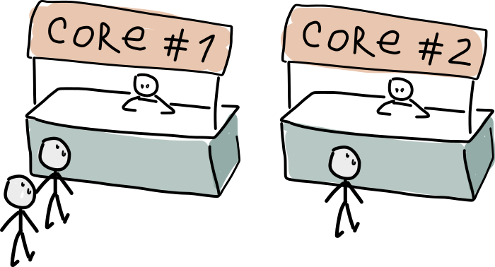
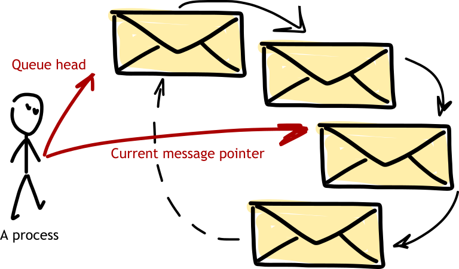

Processes ELI5¶
This is a high level overview for how processes are made and how they work.
General overview¶
A process is a simple C structure, which contains a heap, a stack, registers, and an instruction pointer. Also, there are some extra fields for exception handling, tracing etc. A new process is this structure created with a minimal size heap.
Spawning a new Process (Actor)¶
When you call spawn or spawn_link, the VM allocates a small piece of memory with a new process header (approx 200-300 bytes) and the {heap with the stack} (they live together and take about 1kb initially). A new process is granted a new unique PID, which won’t repeat for a fair amount of days or months after its death, and is registered in a process lookup table.
There are no messages involved in process creation only a couple of memory allocations.
So the newly created process is not known to any scheduler yet. It is then placed into a run queue for its priority (99.99% of processes run as normal), where one of schedulers is able to pick it up and begin executing. Newer versions of Erlang have run queues one per scheduler, but the principle is the same.
Stack¶
{kind=link}
Stack is an array of memory on the young heap used as return stack and temporary storage for variables. Stack begins at the end of the heap and grows back (downwards). The data on stack is grouped into Stack Frames.
When a function needs some temporary memory, it allocates several words on the stack and marks the 0-th word with special CP value. Later it can be used as return address and to find out where next stack frame begins. This temporary memory is also used to preserve registers during recursive calls (thus growing the stack).
Tail-recursive calls avoid keeping this temporary data or free it before recursing. They pass arguments in a smarter way that does not require saving them on stack and does not grow it.
Execution¶
Every new process is assigned to a Scheduler. Scheduler picks one process from the queue and takes its instruction pointer. Then scheduler executes one instruction and loops. After certain amount of work done (reductions) scheduler will place the current process to the back of the queue and select another one. This allows some sort of fair scheduling: every process gets CPU time no matter how busy were other processes in the queue.
Killing and Exiting¶
Killing a process is like sending it an exit exception. The process wakes up
from sleep, receives CPU time, and discovers an exception. Then it will either
terminate or catch the exception and process it like
a regular value. An unconditional kill signal works similarly except that
Erlang code cannot catch it.
Scheduling and Load balancing¶
{kind=link}
By default BEAM VM starts one Erlang scheduler per CPU core. Processes get a
scheduler assigned to them in some manner (for simplicity you can say it is
random). You can configure schedulers using flags +S and +SP. Schedulers
can be bound to cores in different ways (+sbt flag).
There are 4 process priorities: low, normal, high and max. Process at max always runs first making everything else wait. High runs approximately 8 times much often than normal (the number is implementation dependent). Low runs when there is no other work to do.
At runtime schedulers will compare their process queue with the other (namely
the previous one in scheduler array). If the other queue is longer, the
scheduler will steal one or more processes from it. This is the default
behaviour which can be changed. The balancing strategy and can be configured
with VM flags +S and +scl. You could want to use as few cores as
possible to let other CPU cores sleep and save energy. Or you could prefer
equal spread of processes to cut the latency.
Stealing is as easy as moving a pointer from one array to another. This may affect cache locality when an active process jumps CPU core.
Process Registry¶
A global process table maps process identifier (pid) to a Process structure.
To know a pid of a process, refer to its Process.common.id field. A process
is uniquely identified by its local pid. Remote pids contain more information:
a node name and internal node id. Remote pids have to be resolved on the node
which owns them.
Another global table (process registry) maps names to pid. You can reach it
from Erlang by using erlang:register, erlang:unregister and
erlang:whereis BIFs.
Message Queues¶
{kind=link}
Messages are stored on the heap or in heap fragments, and are chained together using a single linked list. Message queue is a C structure which belongs in Process struct and it contains Terms sent to the process. Boxed data for larger or nested terms is located on the heap. A pointer to position in the queue exists, and it is advanced with BEAM opcodes which scan the mailbox. When scan pointer reaches the end of the mailbox, the process is put to receive sleep. The pointer is reset to the beginning of the queue only if a message was matched. This is why selective receive on large mailbox queues is slow.
Sending a Message¶
Sending a message to a process is simple — this is how VM does it:
Lock the process mailbox (or don’t, if running on a single core).
Copy message to destination process heap.
Add the resulting term to process mailbox.
Unlock the mailbox.
If the process was sleeping in a receive, it would return back to scheduling queue and wake up when possible.
A process waiting for a message (in receive operator) is never queued for execution until a message arrives. This is why millions of idle processes can exist on a single machine without it breaking a sweat.
Traps¶
Traps are a feature of the VM loop which allow to interrupt long running BIFs temporarily. State is saved in temporary memory block and control returns to the scheduler. Process sets its instruction pointer to the special trap instruction and the BIF returns.
During the trap the current process is placed to the back of the process queue which allows other processes to run. When the time comes again, the VM loop encounters the trap instruction and jumps back to the long running BIF.